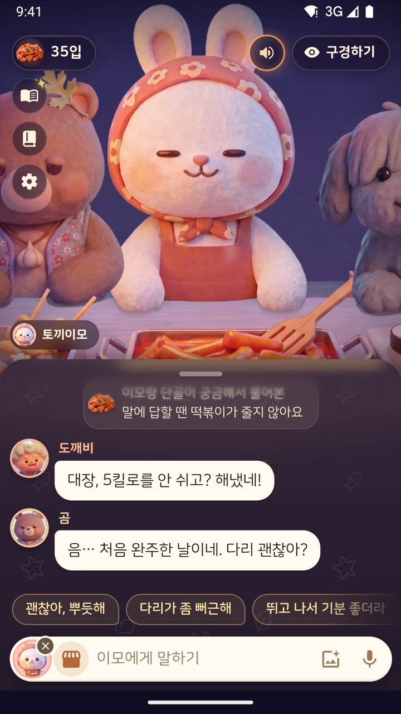
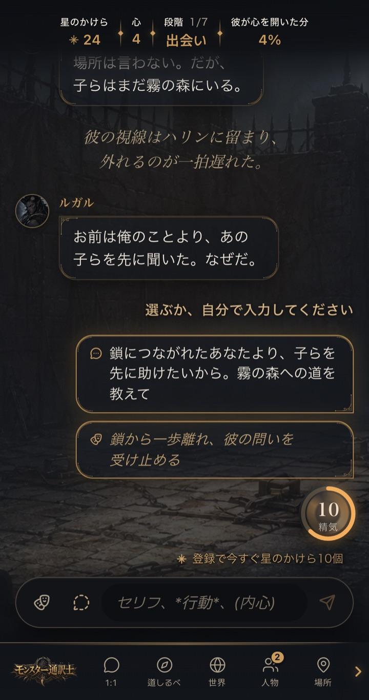
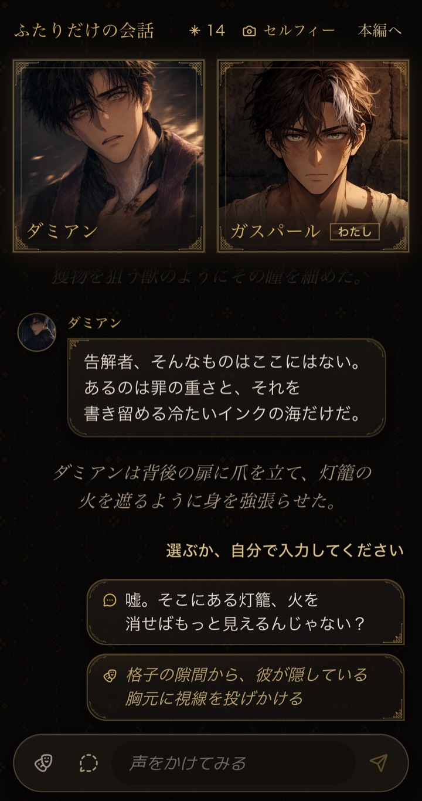
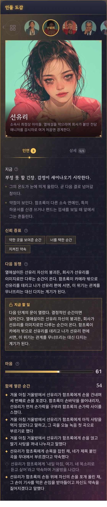
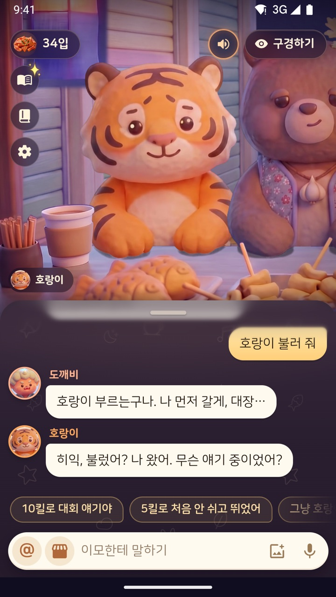
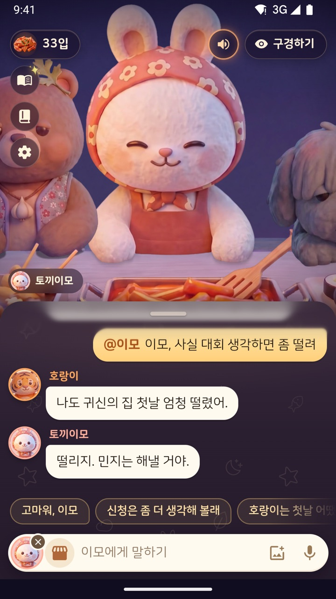
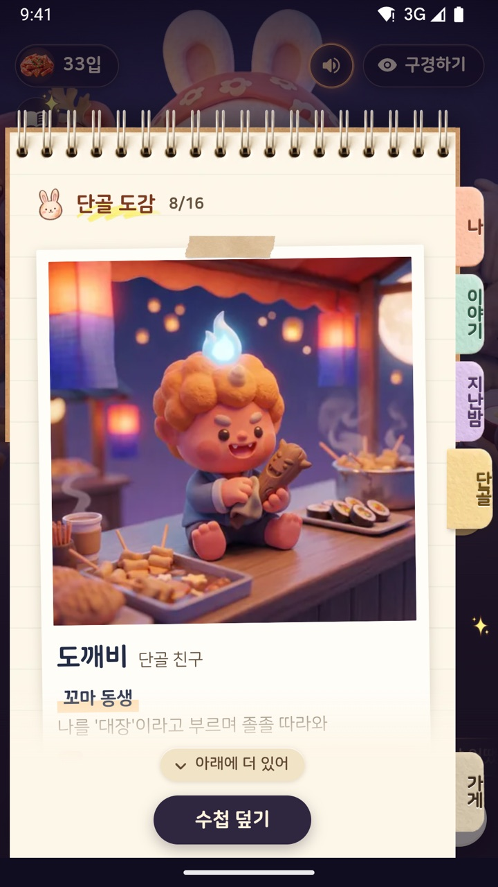

Case 022026Raymind.AI
채팅 제품대화가 곧 제품인 AI 서비스 두 개
IsekaiPlay와 토끼이모의 수다분식은 거의 모든 일이 채팅 안에서 이뤄지는 AI 서비스입니다. 혼자 기획하고 디자인했고, 코드는 Claude Code로 만들었습니다. IsekaiPlay에서는 AI 캐릭터가 플레이어를 기억하고 플레이어에게 집중하게 했고, 토끼이모에서는 여러 캐릭터가 한 사람의 이야기를 함께 듣는 1대다 대화와 음성 대화를 설계했습니다.
isekaiplay.com↗ tokkiimo.com↗- 역할
- 기획, 대화 설계, UX와 UI, 안전 규칙,
개발(Claude Code) - 기간
- IsekaiPlay 2026년 6월부터, 토끼이모 2026년 10월부터
- 플랫폼
- IsekaiPlay는 웹. 토끼이모는 웹 베타, iOS와 Android 출시 준비 중. 두 서비스 모두 한국어, 영어, 일본어 지원
- 팀
- 1인. 코드는 AI 에이전트가 쓰고, 저는 화면과 모든 변경을 검토합니다


프로젝트 소개
IsekaiPlay는 상태창이 있는 이세계에서 한 캐릭터와 관계를 쌓아 가는 1인용 AI 인터랙티브 로맨스 판타지입니다. 이야기의 큰 줄기는 시즌 단위로 설계하고, 매 턴의 대사는 플레이어의 말에 맞춰 실시간으로 생성됩니다.
토끼이모의 수다분식은 밤에 들러 토끼이모와 단골 캐릭터들에게 하루를 털어놓는 1대다 대화 서비스입니다. 팔도사주와 TarotMasters에서 사람들이 실제로 털어놓은 고민에서 배운 점을 바탕으로 만들었고, 대화는 고민 자체에서 시작합니다.
- 제가 정하는 것
- 대화의 원칙, 캐릭터의 목소리, 화면, 안전 규칙, 가격 구조
- 에이전트가 하는 것
- 코드, 빌드와 검사, 가상 손님과 대화를 나눠 품질을 확인하는 테스트
- 쓰는 모델
- OpenAI, Gemini, DeepSeek. IsekaiPlay에서는 무슨 일이 일어났는지 판정하는 LLM 호출과 캐릭터의 대사를 쓰는 LLM 호출을 나눕니다
- 라이브
- isekaiplay.com,
tokkiimo.com(영어 auntierabbit.com, 일본어 usagiobachan.com)
- 해결하려 했던 문제
- AI 캐릭터는 앞선 대화를 쉽게 잊고, 플레이어보다 줄거리에 치우치기 쉽습니다. IsekaiPlay를 직접 플레이해 보니, 캐릭터가 플레이어에게 집중한다는 느낌이 들지 않았습니다. 운영 중인 서비스의 응답 15건을 점검한 결과 플레이어의 말은 15건 모두 이어받았지만, 다음이 궁금하게 끝난 응답은 5건에 그쳤습니다.
- 왜 중요했나
- 대화가 제품인 서비스에서는 첫 몇 턴이 성패를 가릅니다. 일본어 서비스에서 6턴까지 간 세션은
65%가 10턴까지 이어졌습니다. - 어떤 과정으로, 어떤 선택을 했나
- 기억은 데이터로 저장하고 첫 세션 안에 대화로 보여 주게 했고, 캐릭터가 매 턴 플레이어에게 반응하도록 엔진이 규칙을 지키게 했습니다. 토끼이모에서는 메뉴부터 결제까지 거의 모든 기능을 대화 안에서 처리하고, 여러 캐릭터가 함께 듣는 대화와 끼어들 수 있는 음성 대화를 만들었습니다.
- 결과와 배운 것
- IsekaiPlay에서 플레이어가 캐릭터에게 말을 거는 첫 대답은
49%가 10턴에 이르렀고, 말을 걸지 않고 행동만 적은 기존 문구는0%였습니다(인과를 확정한 실험이 아닌관찰). 처음 세 응답을 캐릭터가 말을 걸며 끝내는 규칙은 운영 적용 전 테스트에서6/15를 15/15로 올렸습니다. 토끼이모는 웹 베타 단계라 사용 지표는 싣지 않았습니다.
행동만 적은
끝낸 비율, 운영 적용 전 규칙 테스트
캐릭터 음량이 낮아지기까지. 0.38초면 멈춤
나를 기억하고, 나에게 집중하는 상대.
여러 AI 캐릭터 채팅 서비스를 직접 사용해 본 뒤, 반대 방향을 택했습니다. 끝없이 즉흥으로 이어지다 앞의 일을 잊는 대화 대신, 기억을 보장하고 이야기를 설계합니다. 광고는 없고, 사랑과 결말은 결제로 살 수 없게 했습니다.
화면과 엔진의 모든 결정은 플레이어가 캐릭터가 자신을 보고 있다고 느끼는지를 기준으로 정했습니다.

기억은 데이터로 저장하고, 대화로 보여 주기
플레이어가 한 말을 구조화된 데이터로 저장하고 서로 어긋나는지 검사합니다. 첫 세션 안에 플레이어가 실제로 한 말을 캐릭터가 짚게 해, 기억한다고 말하지 않고, 대화 속 언급으로 보여 줍니다.
관계는 7단계, 화면에 보이게
관계는 일곱 단계로 진행되고, 대화 위 상태창에 현재 단계와 마음이 표시됩니다. 인물 도감에는 지금 관계의 상태와 함께 쌓은 순간들이 남습니다.
플레이어에게 먼저 반응하기
캐릭터는 줄거리보다 플레이어에게 먼저 반응하고, 작은 성공을 일찍 경험하게 하며, 다음이 궁금한 지점에서 끝냅니다. 이를 프롬프트의 권고 사항으로 두지 않고, 엔진이 매 턴 강제하는 규칙으로 만들었습니다.
판정과 연기를 나눕니다
무슨 일이 일어났는지 판정하는 LLM 호출과 캐릭터의 대사를 쓰는 LLM 호출을 나눴습니다. 캐릭터가 거절할 때도
첫 대답은 캐릭터를 향하게
플레이어가 고른 첫 대답별로 집계한 결과, 캐릭터에게 말을 거는 대답은
대화 품질 측정
| 측정 항목 | 결과 |
|---|---|
| 10턴까지 간 세션: 상대에게 말을 거는 첫 대답 | 49% |
| 10턴까지 간 세션: 말을 걸지 않고 행동만 적은 기존 문구 | 0% |
| 플레이어의 말을 이어받은 응답 | 15/15 |
| 처음 세 응답이 캐릭터의 말 걸기로 끝남 | 6/15 → 15/15 |
| 조연이 끼어든 응답 | 2/15 → 0/15 |
첫 대답별 값은 테스트 계정을 제외한 실제 사용자 세션

한 사람의 이야기를, 여럿이 함께 듣습니다.
경험 원칙은 처음부터 정해 두었습니다. 모바일 퍼스트, 게임 같은 경험, 따뜻한 환대, 쉬운 사용, 그리고 거의 모든 기능을 채팅 안에서 처리하는 것입니다. 이에 따라 메뉴, 설정, 결제, 지난 이야기도 되도록 이모에게 말하거나 대화 속 버튼으로 처리합니다.
또 하나의 원칙은 1대다 대화 경험을 가장 중요하게 다루는 것이었습니다. 이모 한 명이 듣고, 단골들이 끼어들고, 손님은 원하는 캐릭터를 불러 말을 겁니다.
위로가 목적이므로 집요한 요구, 죄책감 유발, 질투, 공포 조성 같은 화법은 쓰지 않습니다.
광고와 소개 글에서는 상담이나 치료로 표현하지 않고, 들어 주고 기억하는 수다로 소개합니다.



대화의 중심은 손님
캐릭터가 손님에게 물은 뒤 12초 동안 대답이 없으면,
이모의 수첩과 나의 일기
이모의 수첩에는 손님이 한 말만 남기고 민감한 정보는 남기지 않습니다. 일기장은 손님의 것이라 AI에게 보내지 않습니다. 이모의 수첩은 이모의 기록이고 일기장은 손님의 개인 영역이라는 것이 제가 정한 기준입니다.
목소리로도, 끼어들 수 있게
늘 듣는 모드와 눌러서 말하는 모드를 두고, 발화의 끝은 한국어 문장 끝맺음으로 판단합니다. 캐릭터가 말하는 중에 손님이 말하면 0.12초 만에 목소리를 낮추고 0.38초 만에 멈춥니다.
목소리는 가격이 다릅니다
음성이 나오는 대화와 글만 있는 대화는 원가가 달라 같은 가격으로 둘 수 없습니다. 메시지당 원가를 기능별로 기록하고, 음성 대화는 시간제로 별도 가격을 정했습니다. 앱이 먼저 물어본 질문에 답할 때와 위기 상황에는 요금을 받지 않습니다.
한국어, 영어, 일본어로 웹, iOS, Android를 만들었습니다. 웹은 베타로 운영 중이고 앱은 출시 준비 중이라, 사용 지표는 싣지 않았습니다. 화면은 Android 스토어용 한국어 스크린샷이고, 이름과 이야기는 모두 예시입니다.
사람들이 이미 쓰는 카카오 기능으로 연결했습니다.
| 기능 | 서비스 | 이유와 결과 |
|---|---|---|
| 카카오페이 바로 결제 | 팔도사주, TarotMasters | 결제 창을 거치지 않고 결제 앱으로 바로 넘어가게 했습니다. 인스타그램과 페이스북 인앱 브라우저에서 카카오페이를 선택한 180명 중 |
| 카카오톡 공유 | TarotMasters | 공유 시트를 본 사람의 |
| 카카오톡 채널 챗봇 | 팔도사주 | 채널로 들어온 질문에 사이트의 무료 정보로 바로 답합니다. AI는 쓰지 않았고, 버튼 문구는 카카오의 8자 제한에 맞췄습니다. |
| 카카오톡 채널 아침 메시지 | 팔도사주 | 매일 아침 8시에 한 줄 메시지를 채널로 보냅니다. |
| 카카오 로그인 | 토끼이모, PastLife | 토끼이모에서는 선택 사항으로 로그인 없이도 모든 대화가 가능하며, 카카오 계정에서는 닉네임만 받습니다. |
모두 제가 정하고 Claude Code로 직접 연동했습니다.
대화가 제품인 서비스를 만들며 배운 다섯 가지
-
01
기억은 말이 아니라 보여 주는 것입니다
기억한다고 말하는 것보다, 플레이어가 실제로 한 말을 첫 세션 안에 짚어 주는 한 줄이 더 큰 신뢰를 준다고 판단했습니다. 따라서 기억은 데이터로 저장하고, 서로 어긋나는지 검사하고, 대화 안에서 꺼내 보이게 했습니다.
-
02
상대가 나에게 집중해야 대화가 이어집니다
잘 설계한 줄거리도 상대가 나를 보지 않으면 지루합니다. 첫 반응은 플레이어에게 향하고, 작은 성공은 일찍 오며, 끝은 다음이 궁금한 지점에 둡니다. 이를 프롬프트의 권고 사항이 아니라 엔진이 매 턴 지키는 규칙으로 만들었습니다.
-
03
거의 모든 것을 대화 안에서
메뉴, 설정, 결제, 지난 이야기도 캐릭터에게 말하거나 대화 속 버튼으로 하면, 사람들은 새 화면을 배울 필요가 없습니다.
-
04
여럿이 들으면 다른 대화가 됩니다
이모가 듣고, 단골이 끼어들고, 내가 원하는 캐릭터를 불러 말을 겁니다. 일대일 상담보다 가볍게 시작하도록 한 설계이며, 체류 시간은 출시 후 측정할 과제입니다.
-
05
가격과 원가도 대화 설계의 일부입니다
목소리가 나오는 대화와 글만 있는 대화는 원가가 다릅니다. 기능을 고를 때마다 메시지당 원가를 함께 기록하고, 음성은 시간제로 별도 가격을 정했습니다. 위기 상황에는 요금을 받지 않습니다.